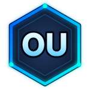

PROJECT_001 / WEB PLATFORM
LOSTLINK⌁
FIND WHAT'S LOST. RECONNECT WHAT MATTERS.LostLink
A country-wide lost-and-found platform concept designed to help people report, discover and recover misplaced items.
Discuss this project ↗
OSHAN UDEESHA.EXEA growing collection of coursework, practical builds and experiments. Open a project to explore its details.
A country-wide lost-and-found platform concept designed to help people report, discover and recover misplaced items.
Discuss this project ↗A supermarket management system focused on backend services, data handling and API development.
Discuss this project ↗A dark glassmorphism calculator interface exploring component structure and mobile UI design.
Discuss this project ↗